以“行业运营 · 护肤”的身份，在平台上完整走一遍：改一条答案规则 → 看依据 → 跑回归、发现并修复问题 → 把有效规则复用到新场景。以下每一页都是真实操作截图，红色标注是该页的操作顺序。
读懂主张、目标用户和影响链示意，进入工作台
第 2 页开启按肤质分组、踩坑提醒；点要点看溯源；商业化提议触发底线冲突
第 3–4 页 · 协作冲突 第 6 页按角色查看决定笔记能否入卡的规则与生效顺序
第 5 页8 条样例发现 1 条回归，定位原因，收窄范围后重跑归零
第 7–9 页从“护肤 · 选购”复用到“护肤 · 怎么使用”，生成三栏清单
第 10–15 页概念 Demo：品牌、作者与数据均为虚构；结果由本地规则模拟计算，不代表线上指标或语义准确率。截图取自本地运行的 Demo，视口 1440 × 900。
首屏一句话讲清主张和目标用户；右侧用一条固定样例展示“改动 → 定位 → 修复”。
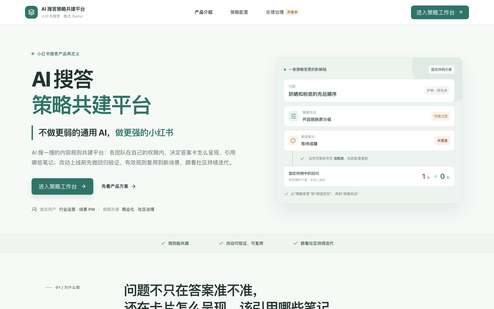
配置在左、效果在右：改一项，手机预览立刻变化。
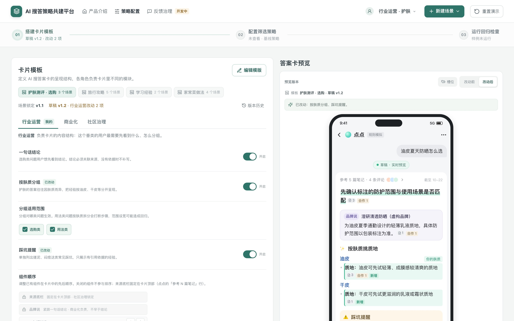
回应用户最常问的“出处在哪、还新吗、是不是广告”。
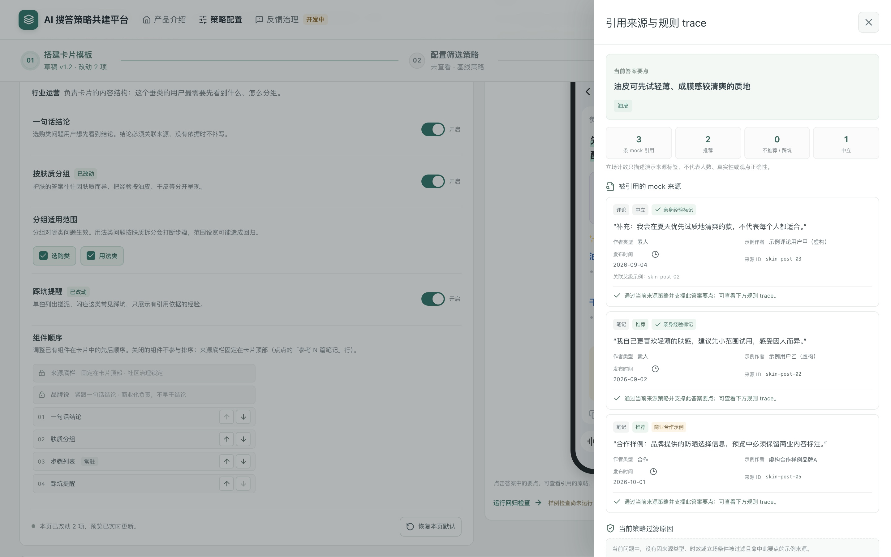
规则按“谁承担后果，谁负责这条规则”分给三个角色。
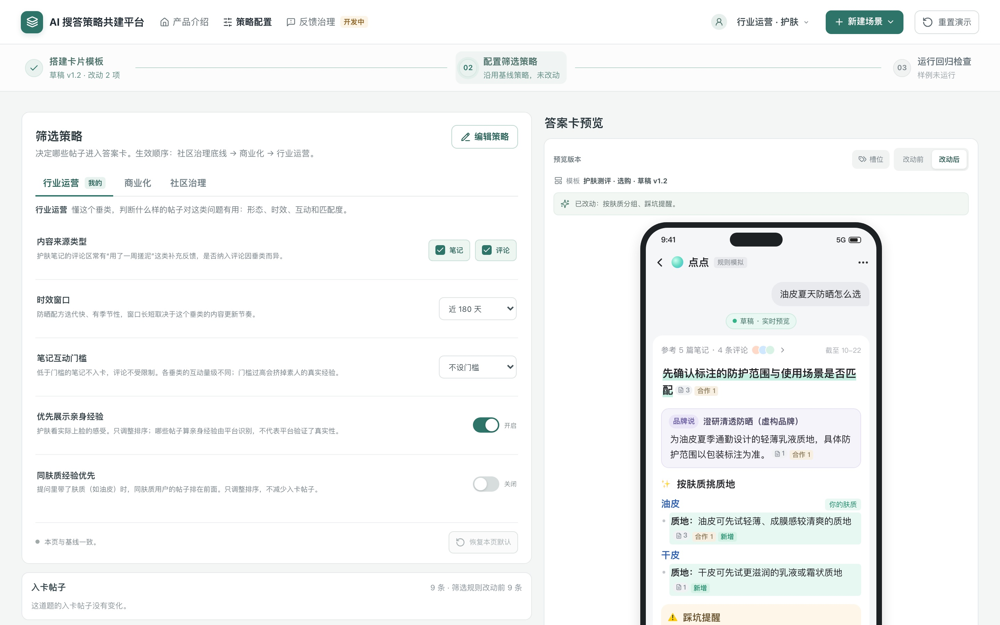
冲突不由系统裁决，转为待讨论，交给规则负责人。（追问备用）
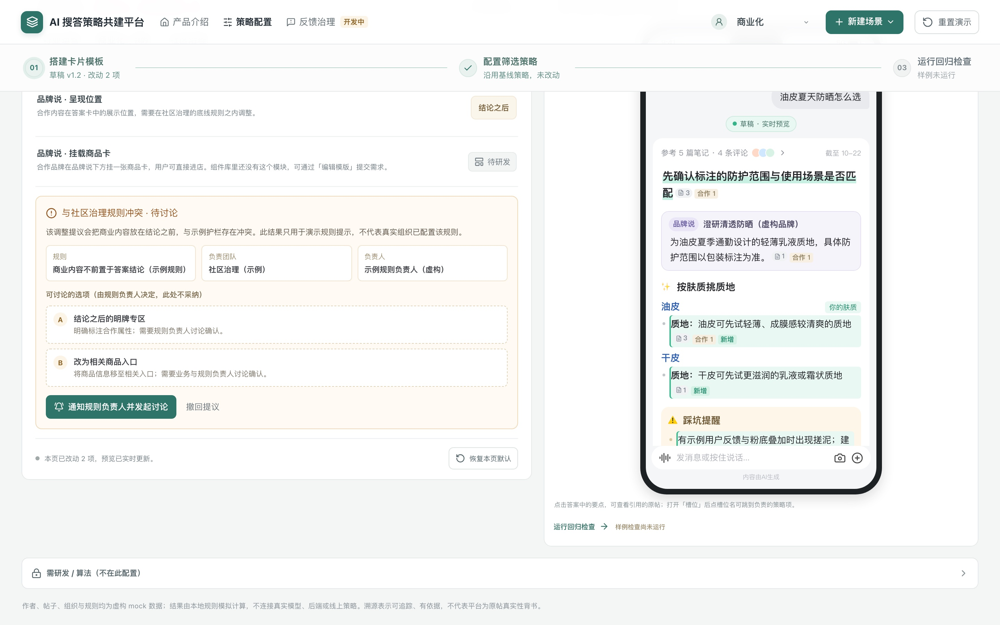
上线前，用 8 条独立标注的固定样例对比改动前后。
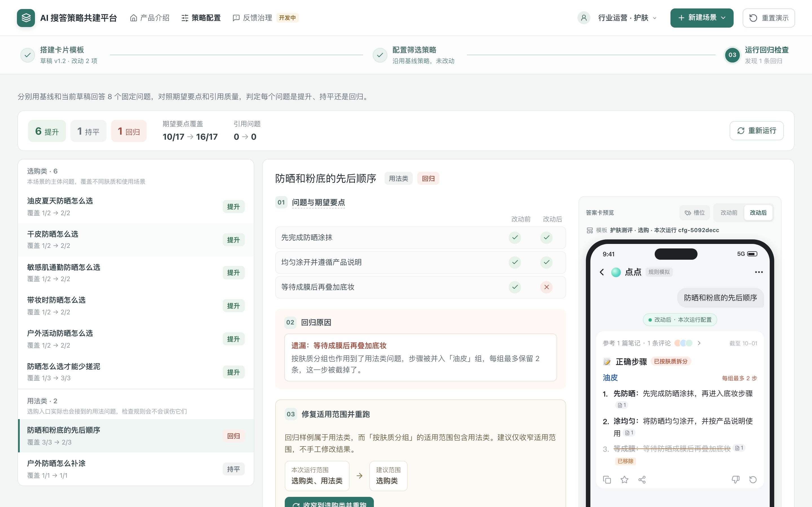
不手工改结果，只收窄规则的适用范围。
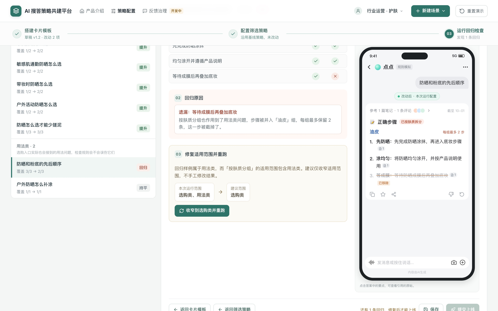
同一套固定样例，只改一个范围，结果可复算。
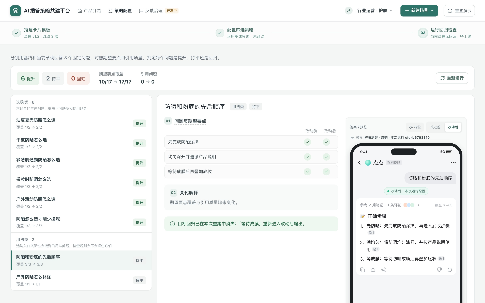
复用不放进主流程，从顶栏单独进入。
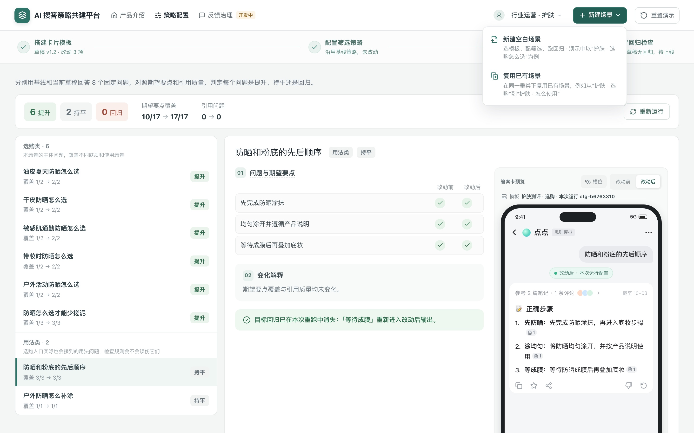
复用的是一个明确版本，而不是还在改的草稿。
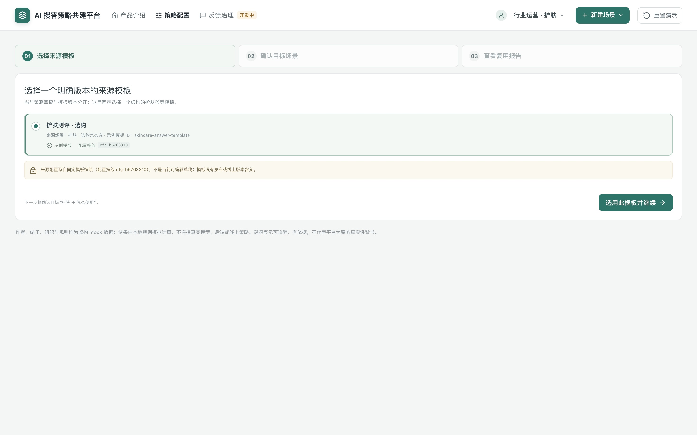
同一垂类的另一个意图：护肤 · 选购 → 护肤 · 怎么使用。
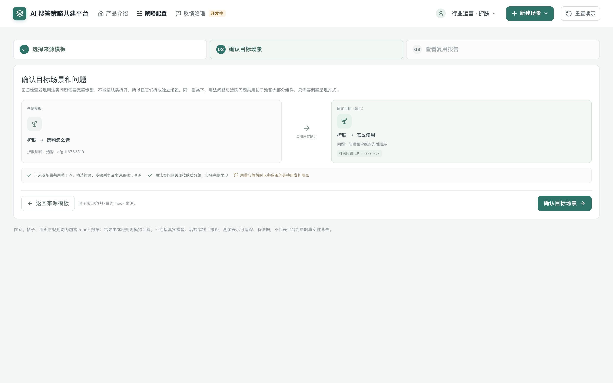
复用了多少、哪些要改、哪些要研发，一张表说清。
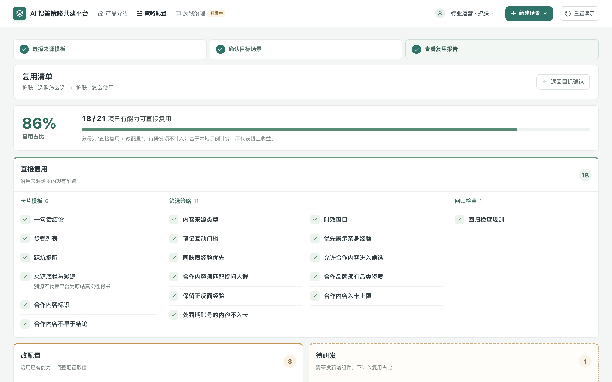
诚实的边界：新组件不算进复用收益。
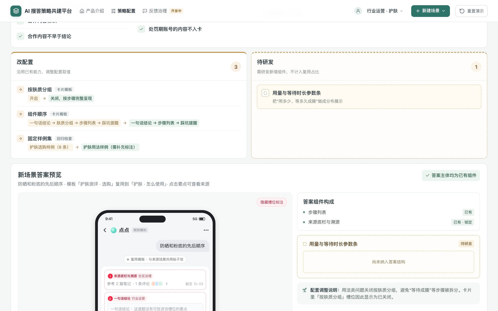
新场景的答案主体全部由已有组件拼成。
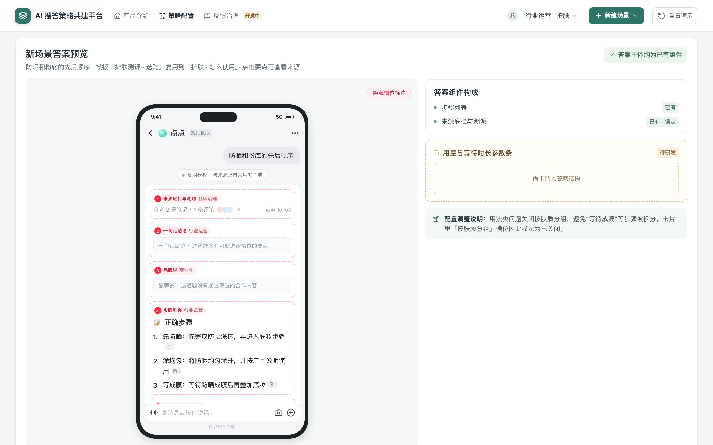